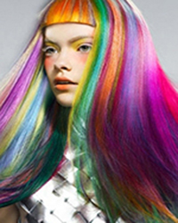

Colored Hair

Do!
1. When you color hair 2 -3 shades darker or lighter than the original shade of hair color the coloring lasts longer.
2. Wait for two weeks after a hair color or before, if you absolutely need to perm or straighten hair.
3. It is best to use a shampoo, which is especially formulated for colored hair.
4. It is best to shampoo colored hair with cool water, as with hot water the color tends to fade.
5. Always use a conditioner – even if your hair is fine or thin.
6. Use a dry shampoo to limit the number of washes, and remove excess oil from the scalp.
7. Use a towel to dry moisture from hair.
8. Use a cap for swimming as both chlorine and salt water will leech color.
9. Drink a lot of water and juices so that the body is hydrated keeping hair nourished and moisturized from within.
Don’t!
1. Water can drain out color molecules from hair, so wash hair with just enough water.
2. Avoid using hair dryers, hair tongs or hot irons as these make the hair porous, which will not hold color well.
3. Exposure to direct sunlight will fade color, use a scarf or hat whenever possible.
4. Don’t color entire lengths of hair; touching up the roots as hair grows will keep the hair from breaking due to chemicals.